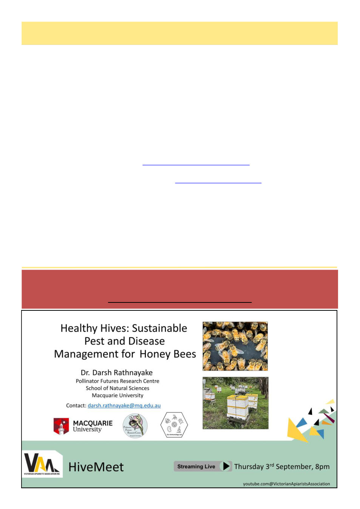

28
Australian Bee Journal
When Will Those Trees Flower?, cont’d
References
1 Goodman, R. (2001). Beekeepers' Use of Honey and Pollen Flora Resources in Victoria. A report for the Rural In-
dustries Research and Development Corporation (RIRDC), Barton, ACT. RIRDC Publication No. 01/050, RIRDC Pro-
ject No. DAV-109A. ISBN 0 642 58272 6; ISSN 1440-6845.
2 Roberts BJ, Catterall CP, Eby P, Kanowski J (2012) Long-Distance and Frequent Movements of the Flying-
Fox Pteropus poliocephalus: Implications for Management. PLoS ONE 7(8): e42532. https://doi.org/10.1371/
journal.pone.0042532
3 Samarth, Kelly, Turnbull & Jameson (2020), "Molecular control of masting: an introduction to an epigenetic summer
memory," Annals of Botany 125(6): 851–858 (doi:10.1093/aob/mcaa004)
4 Moran, P. A. P. (1953). "The statistical analysis of the Canadian lynx cycle. II. Synchronization and meteorology."
Australian Journal of Zoology 1(3): 291–298.
5 Flematti, G. R., Ghisalberti, E. L., Dixon, K. W., & Trengove, R. D. (2004). "A compound from smoke that promotes
seed germination." Science 305(5686): 977. https://doi.org/10.1126/science.1099944 (PMID: 15247439).
6 Wright BR, Franklin DC, Fensham RJ. (2022) The ecology, evolution and management of mast reproduction in Aus-
tralian plants. Australian Journal of Botany 70, 509–530. https://doi.org/10.1071/BT22043
7 Keatley, M. R., & Hudson, I. L. (2007). "A comparison of long-term flowering patterns of Box–Ironbark species in
Havelock and Rushworth forests." Environmental Modeling & Assessment, 12: 279–292. DOI: 10.1007/s10666-006-
9063-5
8 Roberts, Jane., & Marston, F. (2011). “Water regime for wetland and floodplain plants: a source book for the Murray
–Darling Basin.” National Water Commission, Canberra.
9 Bren, L. J. (1988). "Effects of river regulation on flooding of a riparian red gum forest on the River Murray, Australia."
Regulated Rivers: Research & Management 2(2): 65–77.
10 Di Stefano, J. (2002). "River red gum (Eucalyptus camaldulensis): a review of ecosystem processes, seedling re-
generation and silvicultural practice." Australian Forestry 65(1): 14–22.
(Continued from page 27)
Deadline for the next journal is Tuesday 1st of September 2026
Please send any submissions to new email address
abjeditor@vicbeekeepers.com.au